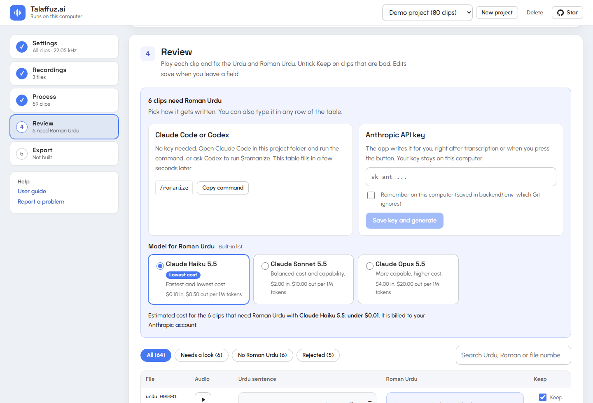

Turn long Urdu recordings into a training dataset
Drop in your recordings. The app cuts them into sentence-length clips, removes noise and music, transcribes each clip
in Urdu, and exports numbered wav files with metadata.csv and metadata.xlsx. It builds
datasets only. There is no model training.
- ستاروں سے آگے جہاں اور بھی ہیں
- جیسی کرنی ویسی بھرنی۔
- ارے بھائی، چائے تو پی کر جاؤ۔
- ہزاروں خواہشیں ایسی کہ ہر خواہش پہ دم نکلے
- چراغ تلے اندھیرا۔
- گھر پہنچ کر ایک فون ضرور کر دینا۔
- پتا پتا بوٹا بوٹا حال ہمارا جانے ہے
- جو گرجتے ہیں وہ برستے نہیں۔
- آج شام چھت پر بیٹھ کر بارش دیکھیں گے۔
- عشق نے غالب نکما کر دیا
- اس شہر کی گلیوں میں میرا بچپن بسا ہے۔
- دودھ کا دودھ، پانی کا پانی۔
Where do you want to run it?
Pick a place from the list. The steps for it appear right below.
- Google Colab Nothing to install. A free GPU makes transcription much faster than most laptops. Needs a Google account
- Claude Code Claude sets the project up on your PC, starts it, and writes the Roman Urdu column for you. Needs Claude Code, uv and Node.js
- OpenAI Codex Codex sets the project up on your PC, starts it, and writes the Roman Urdu column when you ask. Needs Codex CLI, uv and Node.js
- Windows PC Two scripts and you are running. Best for private recordings and projects you resume over days. Needs Windows 10 or 11, uv and Node.js
Run it on Google Colab
The notebook installs everything, starts the app and gives you a link to open it. A note above each cell tells you what it does and what to do next.
- No installEverything runs in a browser tab on Google's machine.
- A free GPUTranscription is much faster than on most laptops.
- Saved to DriveProjects live in your Google Drive, so you can resume after a disconnect.
- GuidedRun the cells top to bottom. Each one explains itself.
-
Open the notebook
Use the Open in Colab button above. It opens in a new tab and asks you to sign in to Google if you are not already.
-
Pick a GPU
In Colab choose Runtime, then Change runtime type, then a GPU. A T4 is enough. Without one the app still works, but each clip takes about 35 seconds.
-
Run all
Choose Runtime, then Run all. When Colab asks, allow access to Google Drive so your projects survive the session ending. The first run takes several minutes.
-
Open the app
Step 5 of the notebook prints a link. Open it, add your recordings and follow the numbered steps. For big files, use the box named "Add files that are already on this computer" with a Drive path such as
/content/drive/MyDrive/recordings. -
Download the dataset
After you press Build dataset in the app, run the last cell of the notebook to download
dataset.zip.
What each notebook cell does
- Check the machine. Shows whether you have a GPU and how much disk space is free.
- Install the app. Downloads the code, installs the Python packages and builds the web page.
- Where to save projects. Mounts Google Drive, or keeps everything on the Colab machine.
- Roman Urdu key. Optional. Reads an
ANTHROPIC_API_KEYsecret if you added one. - Start the app. Starts the server and prints the link to open.
- Show the app inside the notebook. Optional, for people who prefer one tab.
- Download the dataset. Downloads the latest
dataset.zip. - Stop the app. Frees the GPU when you are done.
Free Colab limits how long a GPU session can run and stops idle sessions. A long project may take several sessions, and progress is saved after
every clip, so you press Continue each time. For Roman Urdu in Colab, paste an Anthropic API key in the app's Review step, or save it as a Colab
secret named ANTHROPIC_API_KEY. You can also type it in the app, or copy the project folder to your own computer later and run /romanize in Claude Code or $romanize in Codex.
Run it with Claude Code
Claude Code does the setup for you and, once clips are transcribed, writes the Roman Urdu column with a single command. No API key is needed.
-
Install the tools
You need Claude Code, uv and Node.js on a Windows PC, plus Git.
-
Clone the project
git clone {{cloneUrl}} cd {{repoName}} -
Start Claude Code in that folder and paste this prompt
claude
Set this project up on my machine by following the README: run ./setup.ps1, then start the app with ./start.ps1 and tell me when http://127.0.0.1:8000 is ready. Later I will ask you to run /romanize to write the Roman Urdu column.
Not sure how to install something? Open Claude in your browser with the same prompt and ask it to walk you through the install.
Open Claude with this prompt -
Use the app
Open
http://127.0.0.1:8000, add your recordings and press Start. Transcription runs on your PC. -
Write the Roman Urdu
The setup script installs the
/romanizecommand into the project. Restart Claude Code once so it shows up. When the table has Urdu text, type the command. It fills the empty Roman Urdu cells in one fixed style and never overwrites your edits./romanize
Run it with OpenAI Codex
Codex does the setup for you and, once clips are transcribed, writes the Roman Urdu column when you ask. No API key is needed.
-
Clone the project
git clone {{cloneUrl}} cd {{repoName}} -
Start Codex in that folder and paste this prompt
codex
Set this project up on my machine by following the README: run ./setup.ps1, then start the app with ./start.ps1 and tell me when http://127.0.0.1:8000 is ready. Later I will ask you to romanize the project.
Codex asks before it runs commands. Approve them so the setup can finish.
-
Use the app
Open
http://127.0.0.1:8000, add your recordings and press Start. Transcription runs on your PC. -
Write the Roman Urdu
The setup script installs the
romanizeskill into the project. Restart Codex once so it shows up. When the table has Urdu text, type the command. It fills the empty Roman Urdu cells in one fixed style and never overwrites your edits.$romanize
Run it on a Windows PC
Everything runs locally. The first setup downloads the Whisper model, about 1.6 GB, once.
-
Get the code
Download the ZIP and unpack it, or clone with Git.
Download ZIPgit clone {{cloneUrl}} cd {{repoName}} -
Run the setup
Open PowerShell in the project folder.
./setup.ps1
If PowerShell says running scripts is disabled, use this instead:
powershell -ExecutionPolicy Bypass -File .\setup.ps1
-
Start the app
Run this, or double-click
start.bat. The app opens athttp://127.0.0.1:8000../start.ps1
-
Follow the five steps in the app
Settings, recordings, process, review, export. Roman Urdu comes from Claude Code or Codex, from an API key, or from your own typing. The full guide is in the README.
Read the user guide
A dataset in a fixed format
A dataset folder and a spreadsheet with the same rows. A row's wav, Urdu text and Roman Urdu always belong together, and numbering has no gaps even after you reject clips.
- Wavs are mono 16-bit PCM at one sample rate, 22,050 Hz by default.
- Names are
urdu_000001.wav,urdu_000002.wavand so on. Start at any number to continue an existing dataset. metadata.csvis UTF-8 without a byte-order mark, has no header, and separates three fields with|.metadata.xlsxhas Filename, Urdu Sentence, Roman Urdu and Final, where Final is a formula that rebuilds the CSV line.- After writing, the app re-reads the files and checks the format before it offers the download.
dataset/
wavs/
urdu_000001.wav
urdu_000002.wav
urdu_000003.wav
...
metadata.csv
metadata.xlsx
One line of metadata.csv
urdu_000001.wav|آج موسم بہت اچھا ہے۔|Aaj mausam bohat achha hai.
Columns of metadata.xlsx
Filename | Urdu Sentence | Roman Urdu | Final Final = A2&"|"&B2&"|"&C2
Five steps for every recording
Progress is saved after every clip, so you can stop and continue.
-
1
Cut
Silero VAD finds the speech. Clips are cut at pauses, at the length you choose, so a word is never split in half.
-
2
Clean
Music is removed with Demucs only when the recording has any. Light noise reduction, edge trimming and loudness set to -23 LUFS follow.
-
3
Transcribe
faster-whisper writes the Urdu. Empty, looping and non-speech results are rejected, and doubtful ones are flagged.
-
4
Review
You play each clip, fix the text and untick Keep on bad clips. Roman Urdu is written in one fixed house style.
-
5
Export
Wavs,
metadata.csv,metadata.xlsxand a zip, checked after writing.
What you can change
The defaults suit most recordings. Change what you need in the app before you press Start. Settings lock while a job runs.
File numbering
- First file number
- 1
- Raise it to continue an existing dataset.
- Last file number (optional)
- No limit
- Empty keeps every good clip. A number stops the dataset at a fixed count.
- Extra clips to process
- 15 %
- Only used with a last file number. A cushion so rejected clips can be replaced.
Audio quality
- Sample rate
- 22,050 Hz
- Also 16,000, 24,000 and 44,100.
- Noise reduction
- 50 %
- Keep it light. Heavy denoising changes the voice.
- Background music
- Auto
- Removed only if the recording has music. You can force it on or off.
Transcription
- Urdu speech model
- large-v3-turbo
- Also large-v3 (most accurate, slowest), medium and small (faster, clearly worse at Urdu).
- Write Roman Urdu automatically
- On
- Takes effect when an Anthropic API key is set in the Review step, where you also pick the model. Otherwise Claude Code or Codex writes it.
Advanced: clip length and speech detection
- Shortest clipYour choiceClips are packed to at least this long. It starts at 2.5 s.
- Longest clipUp to 1 minYour choice. Up to about a minute works well, and clips never go past it. It starts at 14 s.
- Join phrases closer thanYour choiceSpeech with a smaller gap is merged before packing. It starts at 0.9 s.
- Pause that splits speechYour choiceSilence at least this long ends a speech segment. It starts at 400 ms.
- Speech threshold0.5Detector sensitivity, 0.1 to 0.9. Lower catches quieter speech and more noise.
- Padding around speechYour choiceAdded to both ends so soft consonants are not clipped. It starts at 250 ms.
- Loudness-23 LUFSTarget loudness. The peak stays under -1 dBFS.
These only affect recordings analysed afterwards. For exact-length clips, set the shortest and longest clip to the same value. The app then cuts on the clock and ignores pauses, so words can be split in half.
Fixing the transcripts
Urdu speech recognition gives a draft, not a final answer. Published word error rates for Whisper on Urdu run from about 18 percent to over 40 percent depending on the benchmark. The review table is built for that.
- Play any clip and edit the Urdu and Roman Urdu in place. Edits save when you leave the field.
- Filters jump to clips that need a look, clips without Roman Urdu, and rejected clips.
- Flags explain what looks wrong: repeated words, digits, low confidence, clipping and more.
- Search by Urdu text, Roman text or file number.

Questions
Does it train a text-to-speech model?
No. It builds the dataset you train on, and nothing else.
Where does my audio go?
It stays on the machine that runs the app, which is your PC or the Colab machine you started. Only the Urdu sentences are sent to the assistant you choose when Roman Urdu is written, which is Claude Code, Codex or an Anthropic API key.
Do I need a GPU or an API key?
No to both. On a laptop CPU, transcription takes about 35 seconds per clip. A Colab GPU brings that down a lot. Without an API key, Claude Code or Codex writes the Roman Urdu, or you type it.
Can I use my Anthropic API key, and what does it cost?
Yes. Paste the key in the app's Review step. The app lists the Claude models on your account with their prices and uses the lowest-cost one by default, Claude Haiku 5.5 at $0.10 input and $0.50 output per million tokens. It shows an estimate before it generates, which is about two cents for 500 clips of six seconds. The key stays on your computer, and you choose whether the app remembers it.
How many clips does it make?
As many as your recordings contain. Numbering starts at 1 by default and every good clip is kept. Set a first file number to continue an existing dataset, and a last file number if you want to stop at a fixed count.
Why is this site only a guide and not the app?
The processing needs real compute and recordings that are often several GB. That fits a Colab session or your own PC, not a website, so this page helps you pick where to run it.
How accurate are the transcripts?
Expect to correct many of them. The app flags the doubtful ones and the review table makes fixing fast. The research behind the defaults, with sources, is in the repository.